Labour Supply and Social Insurance Programs
EC306- Wages and Employment
Justin Smith
Wilfrid Laurier University
Fall 2026

Goals of This Section
Goals of This Section
In this section we will:
- Describe the main social insurance programs in Canada
- Show the effect of Employment Insurance on work decisions
- Analyze disability insurance and workers’ compensation
- Examine statistical evidence for the model predictions
Unemployment Insurance
Employment Insurance: Overview
Purpose:
- Safety net for workers who lose their job
- Collect income while unemployed
Funding:
- Payroll taxes on employers and employees
Two main components:
- Regular benefits - for those unemployed through no fault of their own
- Special benefits - sickness, maternity, parental leave, caregiving
Employment Insurance: Benefits
Regular Benefits Structure
- 55% of average insurable weekly earnings
- Up to a maximum amount
- Duration: 14 to 45 weeks
- Depends on unemployment rate and hours worked in last year
EI: Simplified Model Parameters
To analyze with income-leisure diagram:
- Must work 14 weeks in the year to qualify
- Benefit is 60% of weekly wage (we use 60% for simplicity)
- Maximum of 20 weeks of benefits
- Can work up to 32 weeks and get full benefits
- Each week worked beyond 32 → lose benefits for that week
- 60% benefit = 60% tax on earnings beyond 32 weeks
- Cannot work and collect EI simultaneously
EI: Budget Constraint
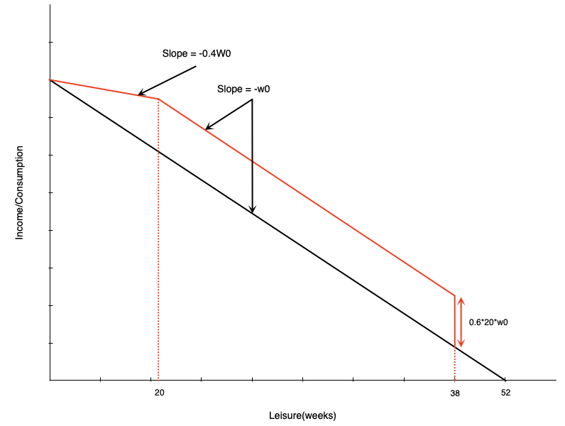
Three segments:
First 14 weeks: Paid at usual wage \(w_0\)
Weeks 14-32 of work: Get 20 weeks of benefits
- Benefit = \(0.6 \times 20 \times w_0\)
More than 32 weeks of work: Benefits reduced week-for-week
- Benefits paid at 60% of wage
- Work paid at 100% of wage
- Keep 40% of wage in this range
Discussion
The EI budget constraint has a segment where the effective wage is only 40% of the market wage. Why might a seasonal worker in the Maritimes choose to work exactly 14 weeks per year under this system?
EI: Effect on Non-Participants
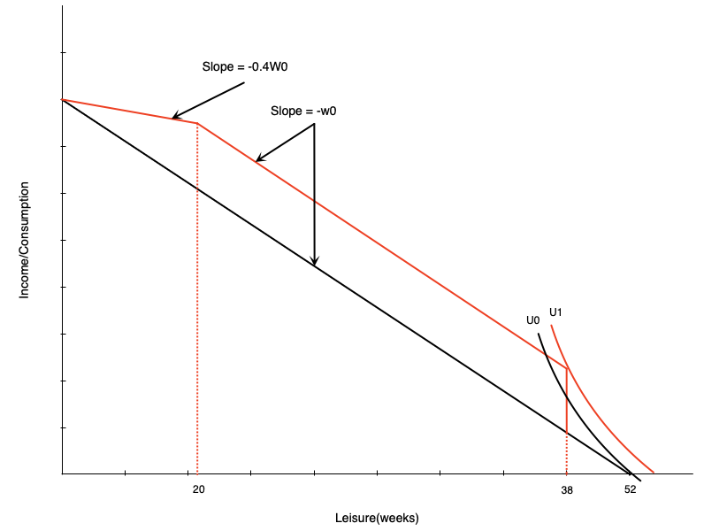
Effect on Non-Workers
A non-participant might start working due to large increase in non-labour income after 14 weeks of work. Induces labour force entry.
EI: Effect in Middle Range
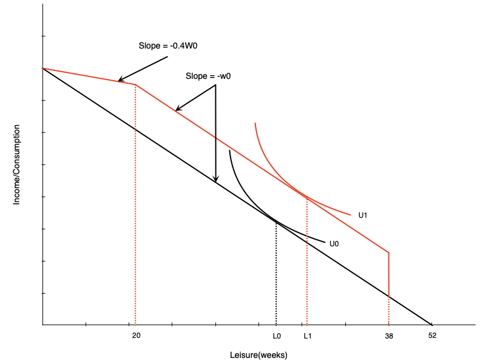
Person getting full benefits:
- Acts like pure income effect
- Will reduce work weeks
EI: Effect on High-Hour Workers
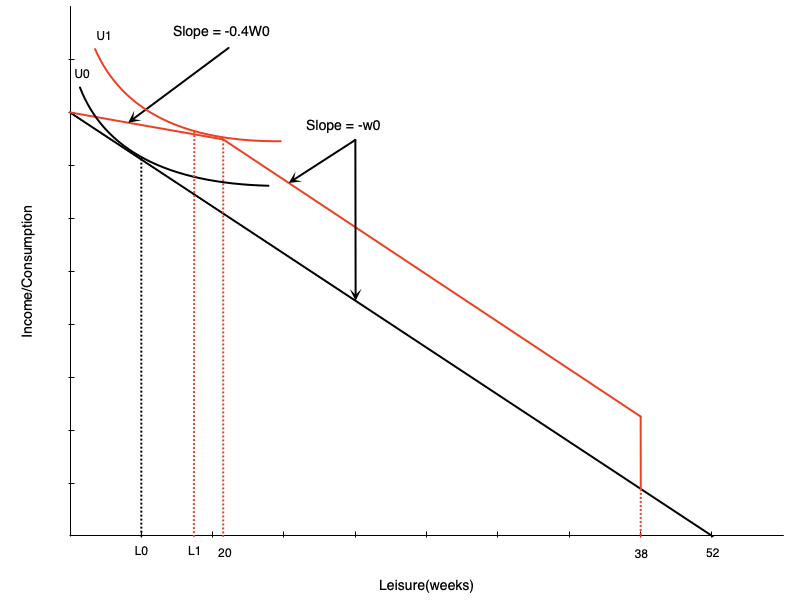
In phase-out range:
- Acts like negative income tax
- Income effect → reduce hours ↓
- Substitution effect → reduce hours ↓
Important
Effect unambiguously negative
Evidence: Maine vs. New Brunswick
Natural experiment:
- Initially had very similar EI schemes
- Later, New Brunswick increased benefit generosity relative to Maine
- Difference-in-differences approach:
- Compare changes in NB before/after to Maine over same period
- Maine acts as control group
- Controls for other time-varying factors
Evidence: Maine vs. New Brunswick Results
New Brunswick experienced:
- Higher labour force participation for marginally-attached workers
- Lower hours for those with stronger attachments
Interpretation
- Corresponds exactly to model predictions
- Highlights work disincentive effects of income maintenance programs
Disability and Workers Compensation
Introduction
What are these programs?
- Provide income support to injured/ill workers
- Come from public and private sources
- Premiums paid by employers and employees
Work Incentive Considerations
- Severe injury/disability: work incentives not a concern (unable to work)
- Partial disability: people may still be able to work
Effect of Disability on Labour Supply
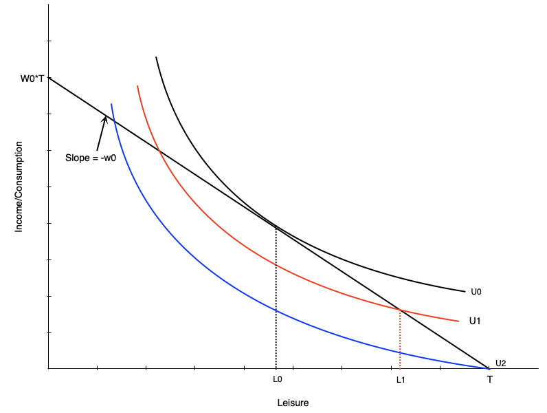
Three scenarios:
Initially: Choose \(L_0\) leisure, work \(H_0\) hours
Injured but can work: Choose \(L_1\) leisure, work \(H_1\) hours
- Lower (non-optimal) indifference curve
Completely disabled: Choose \(T\) leisure, zero work
- Even lower indifference curve
Disability and Preferences
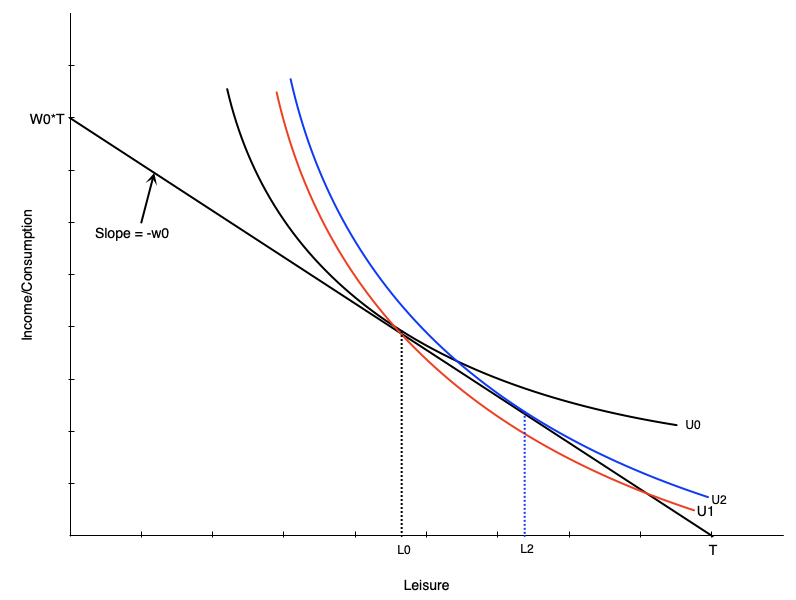
Disability may change preferences:
- Work becomes more difficult
- Preferences tilt toward leisure
- Indifference curve becomes steeper
- MRS increases at each point
- More willing to give up consumption for leisure
Result:
- Even if unconstrained, choose more leisure
- Person moves from \(L_0\) to \(L_2\)
Compensation Schemes
Typical disability insurance structure:
- Pays a fraction of previous earnings
Example: Ontario WSIB
- 85% of net earnings (up to maximum)
- Lasts until return to work or age 65
Two schemes we’ll examine:
- Two-thirds income replacement
- Full income replacement
Two-Thirds Compensation
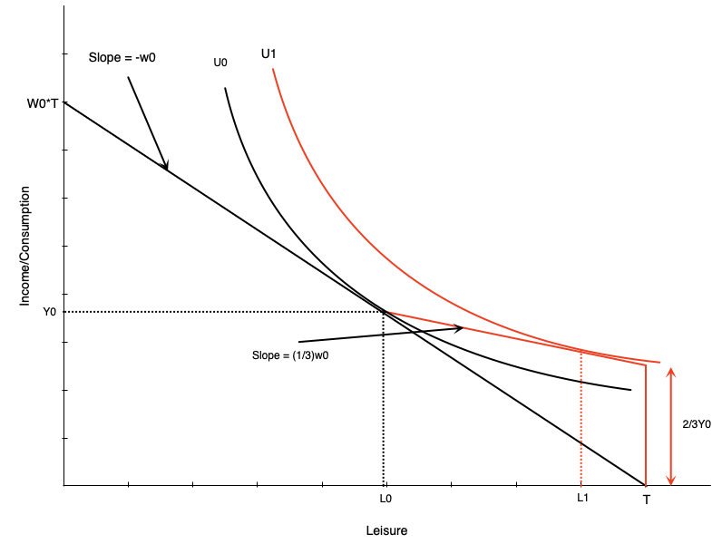
Looks like negative income tax:
- At zero hours: get 2/3 of previous income
- For each hour worked:
- Gain full wage
- Lose 2/3 of wage in benefits
- Keep 1/3 of wage
For workers with flexible hours:
- Effects match NIT
- Negative effect on hours worked
Restricted Hours: Generous Compensation
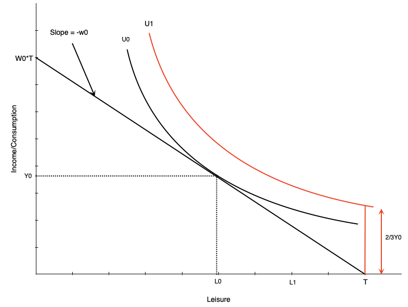
What if worker can only work \(H_0\) hours or zero?
- If scheme generous enough → choose zero hours
- Utility at zero hours > utility at \(H_0\) hours
Implication
Strong work disincentives of generous scheme
No Compensation Case
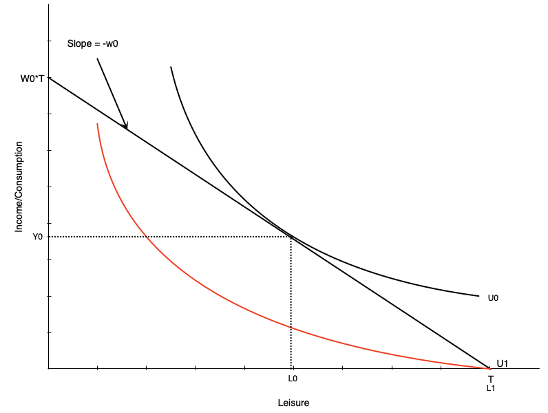
Not Providing Compensation is Problematic
- Person who can work chooses \(H_0\) hours
- Person who cannot work gets lower utility
- End up substantially worse off
Medical Expenses Case
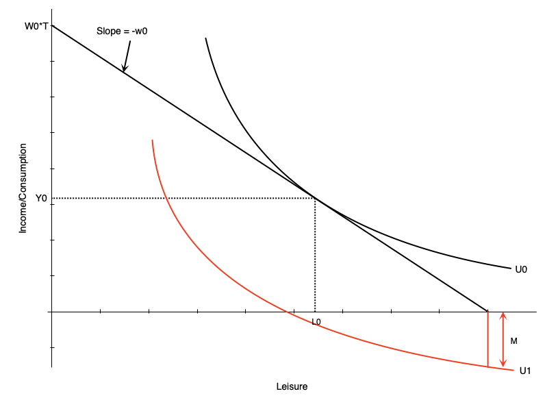
Medical expenses worsen situation:
- Act like reduction in non-labour income
- If large enough, non-labour income could go negative
- Occurs with no/very low compensation
This is an extreme scenario
Optimal Compensation Level
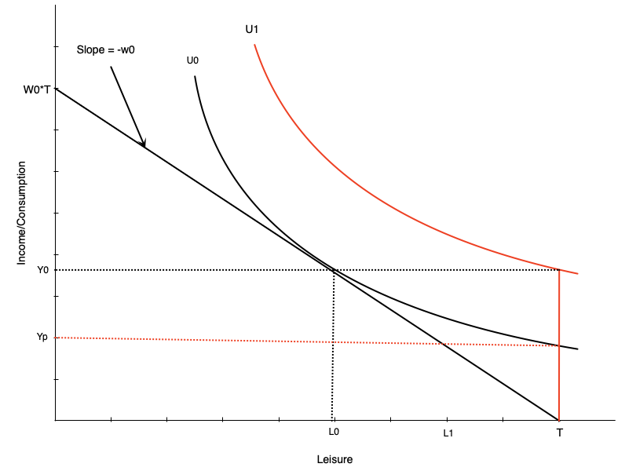
How much to compensate non-workers?
Two options:
- Full income replacement
- Higher indifference curve (\(U_1\)) than working
- Same satisfaction as working
- Same indifference curve as working
- Lower compensation (\(Y_p\))
Note
The optimal level is a policy question
TODO — Empirical Evidence of Work Incentives (Disability)
Not yet written
BFGLSS 2026 covers:
- Chapter 5 closes with evidence on disability insurance and workers’ compensation and work incentives. The deck has the theory but no evidence slides.
Summary
Summary
Social insurance programs:
- Insure workers against job loss, illness, and workplace injury
- Change both the budget constraint and the incentive to work
We examined:
- Employment Insurance, and its effect across the hours distribution
- Disability insurance and workers’ compensation, and the trade-off in setting the compensation rate